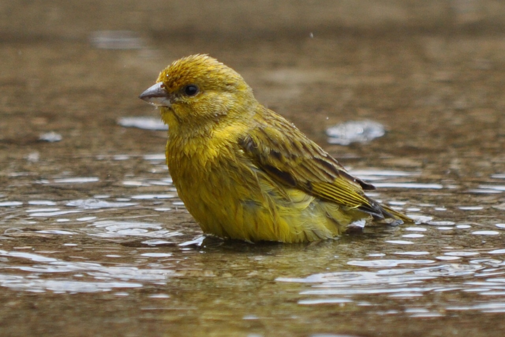
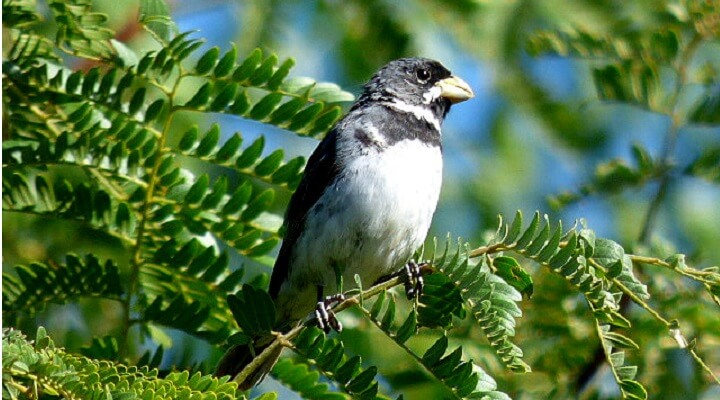
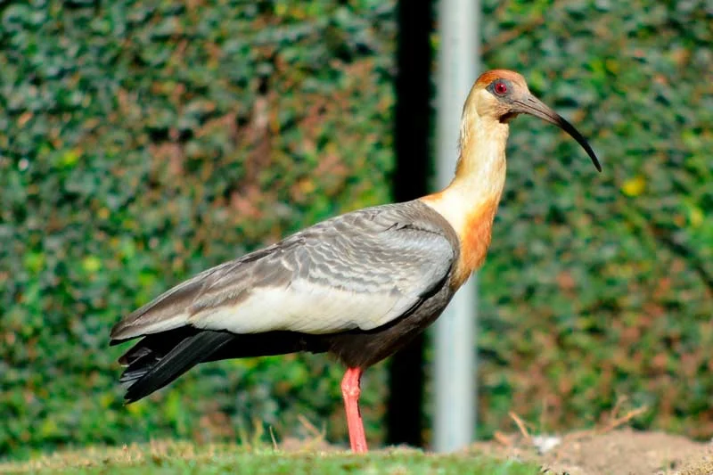
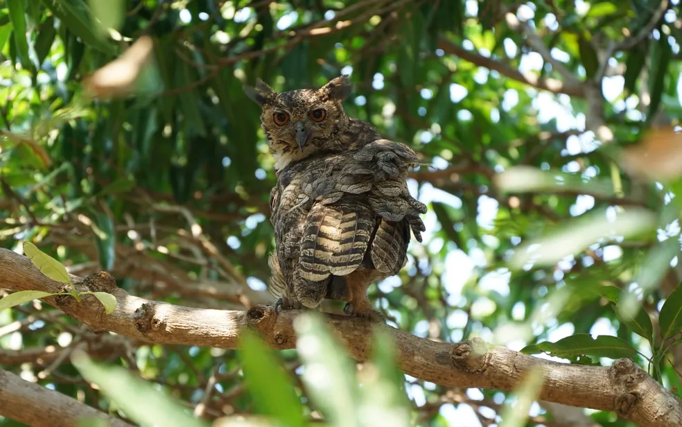

História do Museu
O Museu de Taxidermia do IFMG Campus Bambuí foi idealizado em 2020 por um grupo de professores e alunos do curso de Ciências Biológicas. A ideia inicial era criar um espaço que servisse tanto para o estudo e exposição da fauna regional quanto como um recurso didático para os estudantes do campus.
Com o apoio da instituição, o projeto foi concretizado em 2023, quando o museu foi oficialmente inaugurado. Desde então, o acervo vem sendo ampliado por meio de doações e trabalhos realizados por alunos e pesquisadores. O museu também se tornou um importante centro de referência para a comunidade acadêmica e local, promovendo a educação ambiental e a conscientização sobre a biodiversidade.
Por que ter nomes científicos?
Os nomes científicos são utilizados para identificar e classificar organismos vivos de forma universal. Eles seguem um sistema chamado nomenclatura binomial, criado por Carl Linnaeus no século XVIII. Esse sistema atribui a cada espécie dois nomes em latim: o primeiro é o gênero (sempre começando com letra maiúscula) e o segundo é a espécie (sempre começando com letra minúscula).
Por que eles existem?
- Universalidade: Cientistas do mundo todo podem usar esses nomes, independentemente da língua nativa.
- Classificação: Organizam espécies em grupos hierárquicos, refletindo relações evolutivas.
- Precisão:Evitam confusões que podem ocorrer com nomes comuns variados.
No Museu de Taxidermia do IFMG Campus Bambuí, todos os animais são tratados com técnicas modernas de taxidermia, garantindo que cada espécime seja uma representação fiel da espécie, tanto para fins educativos quanto científicos.
Acervo
O acervo do museu conta atualmente com 47 espécimes, incluindo mamíferos, aves, répteis e peixes. Todos os animais são provenientes de doações ou foram coletados de forma ética e sustentável, seguindo rigorosamente as normas ambientais e de preservação.
Aqui esta uma lista de todos os destaques do acervo:
- Acauã (Herpetotheres cachinnans Linnaeus, 1758)
- Arara canindé (Ara ararauna Linnaeus, 1758)
- Beija-flor-tesoura (Eupetomena macroura Gmelin, 1788)
- Bem-te-vi (Pitangus sulphuratus Swainson, 1827)
- Biguá (Phalacrocorax brasilianus Gmelin, 1789)
- Canário-da-terra (Sicalis flaveola Linnaeus, 1766)
- Coleirinho (Sporophila caerulescens Linnaeus, 1758)
- Corrupião (Icterus jamacaii Gmelin, 1788)
- Coruja-buraqueira (Athene cunicularia Molina, 1782)
- Curicaca (Theristicus caudatus Boddaert, 1783)
- Garça-boiadeira (Bubulcus ibis Linnaeus, 1758)
- Jacurutu (Bubo virginianus Gmelin, 1788)
- Maritaca (Psittacara leucophthalmus Statius Muller, 1776)
- Pintassilgo-da-venezuela (Spinus cucullatus Swainson, 1820)
- Pombão (Patagioenas picazuro Temminck, 1813)
- Quiriquiri (Falco sparverius Linnaeus, 1758)
- Rolinha (Columbina talpacoti Temminck, 1811)
- Sanhaço-cinzento (Thraupis sayaca Linnaeus, 1766)
- Seriema (Cariama cristata Linnaeus, 1766)
- Suriri (Tyrannus melancholicus Vieillot, 1819)
- Tucano-açu (Ramphastos toco Statius Muller, 1776)
- Urubu-preto (Coragyps atratus Bechstein, 1793)
- Cachorro-do-mato (Cerdocyon thous Linnaeus, 1766)
- Camundongo (Mus musculus Linnaeus, 1758)
- Capivara (Hydrochoerus hydrochaeris Linnaeus, 1766)
- Cateto (Pecari tajacu Linnaeus, 1758)
- Furão-pequeno (Galictis cuja Molina, 1782)
- Gambá-de-orelha-branca (Didelphis albiventris Linnaeus, 1758)
- Irara (Eira barbara Linnaeus, 1758)
- Jaguatirica (Leopardus pardalis, Linnaeus 1758)
- Jaratataca (Conepatus semistriatus Boddaert, 1785)
- Lobo-guará (Chrysocyon brachyurus Illiger, 1815)
- Lontra (Lontra longicaudis Olfers, 1818)
- Paca (Cuniculus paca Linnaeus, 1766)
- Porquinho-da-índia (Cavia porcellus Linnaeus, 1758)
- Quati (Nasua nasua Linnaeus, 1758)
- Sagui-de-tufos-pretos ou mico-estrela (Callithrix penicillata Geoffroy, 1812)
- Tamanduá-bandeira (Myrmecophaga tridactyla Linnaeus, 1758)
- Tamanduá-mirim (Tamandua tetradactyla Linnaeus, 1758)
- Tatu galinha (Dasypus novemcinctus Linnaeus, 1758)
- Tatu peba (Euphractus sexcinctus Linnaeus, 1758)
- Cobra coral falsa (Erythrolamprus aesculapii Linnaeus, 1758)
- Jacaré-do-papo-amarelo (Caiman latirostris Daudin, 1802)
- Teiú-comum (Salvator merianae Linnaeus, 1758)
- Urutu (Bothrops alternatus Duméril, 1854)
- Tilápia-do-nilo (Oreochromis niloticus Linnaeus, 1758)
- Sapo-cururu (Rhinella sp. Fitzinger, 1826)
Aves
Mamíferos
Répteis
Peixes
Anfibios
Por que Animal Taxidermizado e não Empalhado?
É comum ouvir o termo "empalhado" para se referir a animais preservados, mas essa expressão é incorreta e não reflete o processo real utilizado. A técnica correta é a taxidermia, que vai muito além de simplesmente "encher" o animal com material.
Diferenças entre Taxidermia e Empalhamento:
- Taxidermia: É uma técnica científica e artística que busca preservar a aparência real do animal, mantendo suas características anatômicas e expressões naturais. Envolve a remoção da pele, tratamento químico para conservação, montagem em uma estrutura (manequim) que reproduz o corpo do animal e acabamentos detalhados para garantir realismo.
- Empalhamento: O termo "empalhado" remete a uma prática antiga e rudimentar, onde o animal era preenchido com palha ou outros materiais sem preocupação com a precisão anatômica ou realismo. Esse método não é mais utilizado e é considerado obsoleto.
No Museu de Taxidermia do IFMG Campus Bambuí, todos os animais são tratados com técnicas modernas de taxidermia, garantindo que cada espécime seja uma representação fiel da espécie, tanto para fins educativos quanto científicos.
Visita
O Museu de Taxidermia está aberto ao público de segunda a sexta-feira, das 8h às 17h. A entrada é gratuita, e visitas guiadas podem ser agendadas previamente através do telefone (37) 9999-9999 ou pelo e-mail museu.taxidermia@ifmg.edu.br.
Endereço: IFMG Campus Bambuí - Rodovia Bambuí/Medeiros, 5 Km - Bambuí, MG.
O museu também oferece atividades educativas para escolas e grupos, incluindo palestras, oficinas e exposições temporárias. Entre em contato para mais informações.
O que é Taxidermia?
A taxidermia é a arte e a ciência de preservar animais mortos para exibição ou estudo. Utilizando técnicas específicas, os taxidermistas preparam e montam animais de forma realista, permitindo que sejam exibidos em museus, escolas ou coleções particulares.
A importância da taxidermia é ampla. Em museus de história natural, por exemplo, ela desempenha um papel fundamental na educação, permitindo que as pessoas vejam e aprendam sobre espécies que talvez nunca encontrassem na natureza. Além disso, a taxidermia ajuda cientistas a estudar a anatomia, a evolução e o comportamento dos animais, fornecendo amostras valiosas que podem durar por décadas. Em alguns casos, ela até contribui para a conservação, ajudando a documentar e lembrar espécies ameaçadas ou extintas.
Essa prática requer um alto nível de habilidade artística e conhecimento anatômico, transformando-a em uma combinação única de ciência e arte. No Museu de Taxidermia do IFMG Campus Bambuí, os visitantes podem conhecer de perto o processo de taxidermia e entender como ele contribui para a preservação da memória da biodiversidade.
Curiosidades sobre a Taxidermia:
- A taxidermia moderna utiliza materiais sintéticos para substituir partes do animal, como olhos e narizes, garantindo maior durabilidade e realismo.
- Alguns dos maiores museus do mundo, como o Museu de História Natural de Londres, possuem acervos de taxidermia que datam de séculos atrás.
- A taxidermia é regulamentada por leis ambientais para garantir que a coleta e preservação de animais sejam feitas de forma ética e sustentável.
Causa da morte de alguns animais
O Muzoo (museu de taxidermia do ifmg campus Bambuí) foi criado a partir de carcaças de animais que foram encontrados mortos em diversos locais
* Ao clicar na imagem de cada animal, você pode ter mais informações sobre ele
Destaques do acervo:
- Acauã
- Arara canindé
- Beija-flor-tesoura
- Bem-te-vi
- Biguá
- Canário-da-terra
- Coleirinho
- Corrupião
- Coruja-buraqueira
- Curicaca
- Garça-boiadeira
- Jacurutu
- Maritaca
- Pintassilgo-da-venezuela
- Pombão
- Quiriquiri
- Rolinha
- Sanhaço-cinzento
- Seriema
- Suriri
- Tucano-açu
- Urubu-preto
- Cachorro-do-mato
- Camundongo
- Capivara
- Cateto
- Furão-pequeno
- Gambá-de-orelha-branca
- Irara
- Jaguatirica
- Jaratataca
- Lobo-guará
- Lontra
- Paca
- Porquinho-da-índia
- Quati
- Sagui-de-tufos-pretos ou Mico-estrela
- Tamanduá-bandeira
- Tamanduá-mirim
- Tatu galinha
- Tatu peba
- Cobra coral falsa
- Jacaré-do-papo-amarelo

Vítima de tráfico de animais silvestres (veio do CETRAS)

Vítima de tráfico de animais silvestres (veio do CETRAS)

Encontrado no IFMG sem sinais indicativos da causa mortis (frio?)

Vítima de tráfico de animais silvestres (veio do CETRAS)

Provável vítima de ataque de cães no IFMG

Vítima de tráfico de animais silvestres (veio do CETRAS)

Vítima de tráfico de animais silvestres (veio do CETRAS)

Vítima de tráfico de animais silvestres (veio do CETRAS)

Encontrado no IFMG sem sinais indicativos da causa mortis

Provável vítima de ataque de cães no IFMG

Filhotes por abandono maternal; jovens adultos por menor competência competitiva

Provável vítima de eletrocussão acidental no IFMG

Provável vítima de eletrocussão acidental no IFMG

Morte devido ao cativeiro (veio do CETRAS)

Morte devido ao cativeiro (veio do CETRAS)

Vítima de tráfico de animais silvestres (veio do CETRAS)

Provável vítima de trauma contra superfícies no IFMG

Provável vítima de trauma contra superfícies no IFMG

Vítima de atropelamento na região (veio do CETRAS)

Provável vítima de trauma contra superfícies no IFMG

Vítima de atropelamento; vítima de tráfico de animais silvestres (veio do CETRAS)

Vítima de atropelamento e permanência em cativeiro (veio do CETRAS)
Vítima de atropelamento na região
Encontrado no IFMG sem sinais indicativos da causa morte

Vítima de ataque de cães no IFMG
Eutanásia de animal idoso em sofrimento do criatório do IFMG

Vítima de atropelamento na região
Vítima de atropelamento na região

Vítima de atropelamento na região

Vítima de atropelamento e permanência em cativeiro (veio do CETRAS)

Vítima de atropelamento na região

Vítima de atropelamento na região

Vítima de ataque de cães no IFMG

Vítima de infanticídio no criatório do IFMG

Vítima de ataque de cães da proprietária

Vítima de atropelamento na região

Encontrado no IFMG sem sinais indicativos da causa mortis; vítima de atropelamento; vítima de tráfico de animais silvestres (veio do CETRAS)

Vítima de atropelamento na região

Vítima de atropelamento na região

Vítima de ataque de cães no IFMG

Vítima de atropelamento
Vítima de extermínio direcional (doação Lab. Biologia IFMG)

Jacaré-do-papo-amarelo (Caiman latirostris) Vítima de atropelamento na região